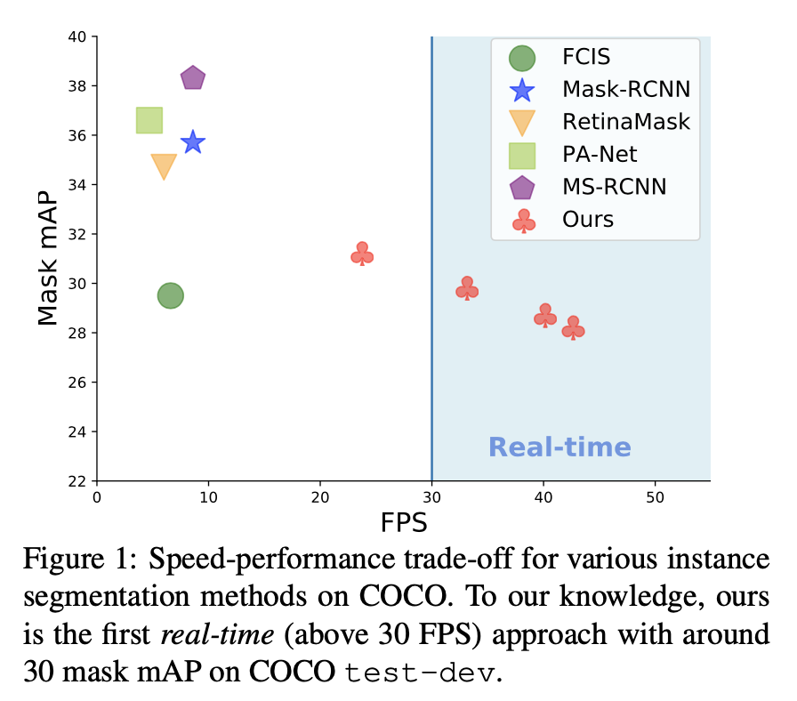
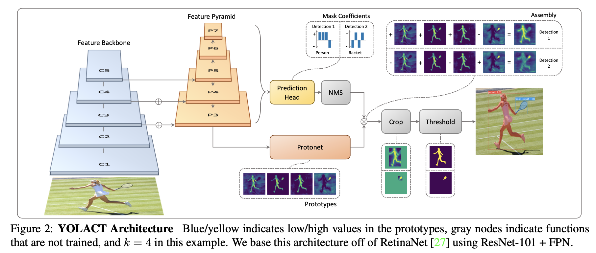
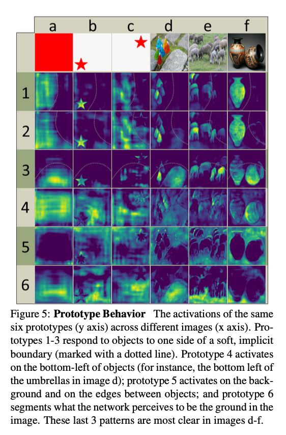
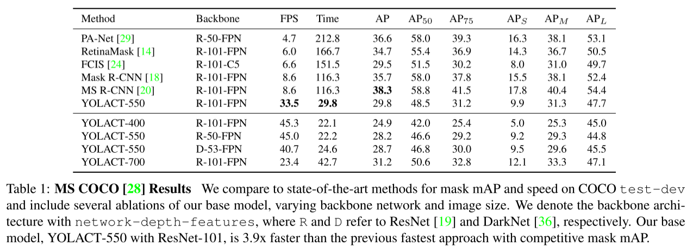
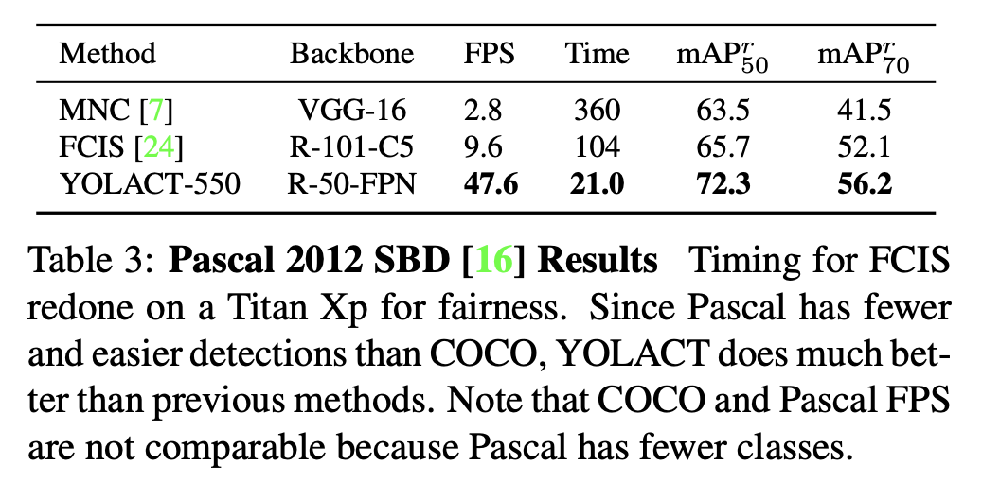
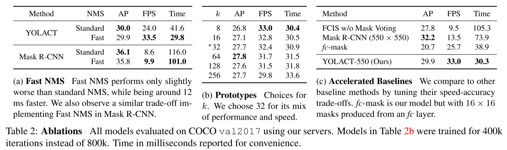
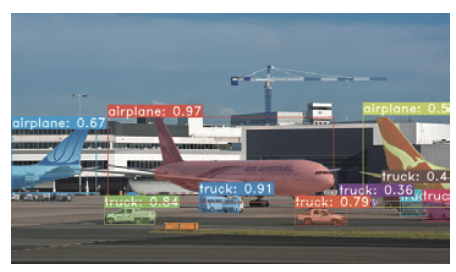
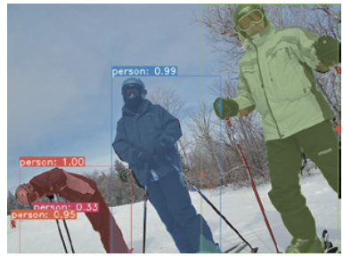

YOLACT - ICCV 19¶
Title: YOLACT: Real-time Instance Segmentation
Review By: Geonsoo Kim
Edited by: Geonsoo Kim
Reference¶
Problem Statement¶
State-of-the-art instance segmentation 네트워크들은 accuracy performance 를 집중해서 연구되었고, 이를 위해 localization 과 segmentation 순차적으로 진행되었습니다. 예를들면 Mask R-CNN 은 region proposal 을 통해 class 가 있는 곳을 예측하고나서 mask segmentation 를 진행하는 구조를 가집니다.
이런 구조는 accuracy 측면에서 장점을 가지지만, 크게 두개의 단계를 거쳐야하는 과정 때문에 final output (segmenation mask) 를 얻기까지 상대적으로 오랜 시간이 걸립니다. COCO Dataset 으로 SOTA 모델 (accuracy 기준) 이였던 Mask R-CNN, MS R-CNN, FCIS, RetinaMask, and PA-Net 은 모두 10 FPS 보다 느린 speed performance 를 보여줍니다.
보통 25~30 FPS 이 넘으면 real-time 이라고 할수있는데 기존의 모델들은 그 기준에 한참 미치지 못합니다.

Contribution¶
YOLACT is the first real-time (above 30 FPS) approach with around 30 mask mAP on COCO test-dev
A novel Fast NMS approach (12 ms faster than traditional NMS)
Proposed Method¶
(1) Overview

(2) Prototype Generation
Prototype generation branch (protonet) predicts a set of k prototype masks for the entire image (no explicit localization step)
Learns how to localize the feature map
Takes deeper backbone feature as input and produces more robust mask and higher resolution prototypes
Learns a distributed representation whose instance is segmented with a combination of prototypes that are shared across categories

(3) Mask Coefficient & Assembly
Typical branches
class branch - to predict class confidences
bounding box branch - to predict 4 bounding box regressors
Mask coefficient branch
third branch to predict k mask coefficients
Localize (activate) only one instance among k prototype masks
Mask assembly
Combine the prototype masks and mask coefficient by using a matrix multiplication
Apply a sigmoid non-linearity to produce final mask
To train the model, three loss functions are used - classification loss, L_cls, box regression loss, L_box, and mask loss, L_mask (=BCE(M, M_gt)) with weights 1, 1.5, 6.125
(4) Fast NMS
Non-Maximum suppression (NMS) to suppress duplicated detections
Typical NMS
Sort the detected boxes by confidence
Remove the anchor boxes sequentially
Fast NMS
Remove the anchor boxes in parallel
Reference: https://https://ganghee-lee.tistory.com/46
Experiments¶
(1) Datasets
MS COCO and Pascal 2012 SBD
(2) Parameter setting
Batch size 8 on a single GPU
ImageNet pre-trained weight
SGD optimizer for 800k iterations
Initial learning rate of 10^-3, weight decay of 5*10^-4, and momentum of 0.9
(3) Results
Comparison of speed and accuracy performance with other models
YOLACT-500 offers 3.9x faster speed than previous fastest approach
Also, offers competitive mask mAP
Speed vs accuracy trade-off in YOLACT models
  
Discussion¶
Despite being much faster, YOLACT fall behind SOTA instance segmentation methods in overall performance
Errors caused by mistakes in the detector
misclassification and box misalignment
Errors caused by mask generation algorithm
Localization failure
If there are too many objects in one spot in a scene, the network can fail to localize each object in its own prototype
Leakage
The model works fine when the bounding box is accurate, but when it is not, the noise outside of the cropped region can creep into the instance mask
 
Summary¶
Goal: faster (real-time) instance segmentation with competitive accuracy performance
Contributions
parallel subtasks
Prototype mask branch - generates prototype masks
Mask coefficient branch - predicts mask coefficients for each instances
Fast NMS